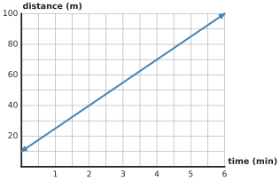
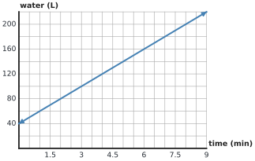
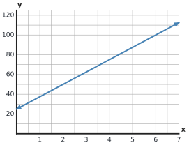
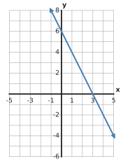
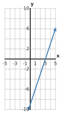
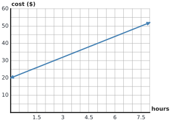
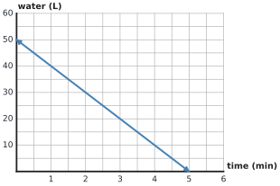

1
Use the graph. At \(t=4\) minutes, what distance is shown?

☐ Knew how to do it ☐ Had to ask for help ☐ Had to look it up
Use the graph. At \(t=4\) minutes, what distance is shown?

Use the same graph. Explain what one horizontal grid interval and one vertical grid interval represent.
A student says the value at \(t=4\) is 4 because the point is four grid spaces above 0. Explain the mistake and give the correct value.
Use the graph. How much more water is shown at 8 minutes than at 3 minutes? Show both readings and the difference.

Use the graph. What water amount is shown at 6 minutes? Then state the value represented by one vertical grid interval.
Without counting grid spaces as ones, read the graph at \(x=6\). State the \(y\)-value and briefly describe how the axis labels helped you.

Identify the \(x\)-intercept and \(y\)-intercept of the line.

A student says, “\((0,6)\) is the \(x\)-intercept because it is on an axis.” Correct the statement and explain how you know.
Identify both intercepts of the line. Then state which coordinate must be 0 at each type of intercept.

The graph shows service cost over time. What does the \(y\)-intercept mean in this situation?

The graph shows water remaining in a tank as it drains. Identify the \(x\)-intercept and explain what it means in context.

For the same tank graph, identify the \(y\)-intercept and explain what it means. Then compare the meanings of the two intercepts.
The rule is \(y=4x-5\). Find the output when the input is \(x=6\).
The rule is \(y=3x+2\). What input produces an output of \(20\)?